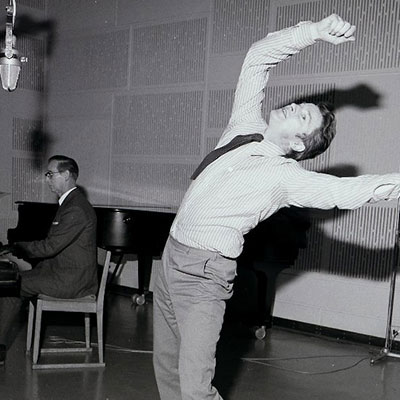
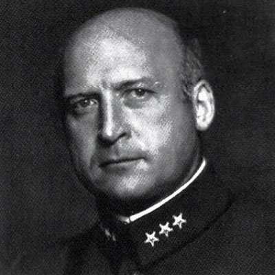
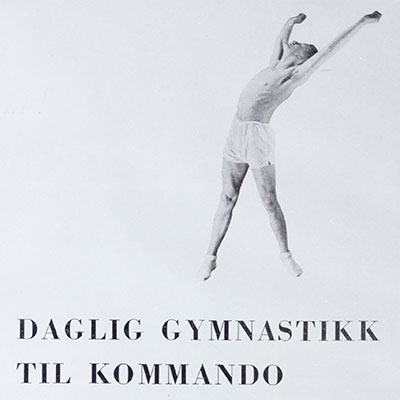
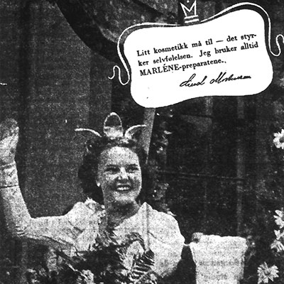
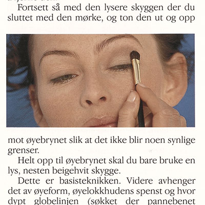
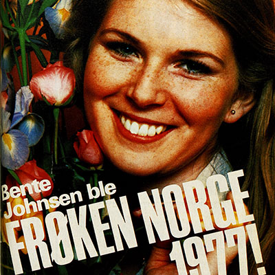
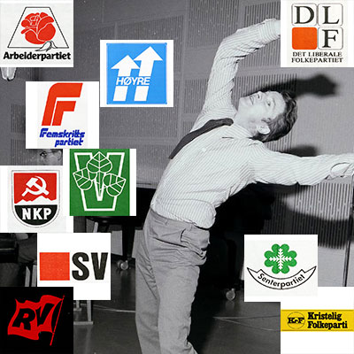

Klipp fra NRK Radioarkivet

Radiogymnastikk med Reidar Morset

Kåseri om gymnastikk
1935.
Husmorgymnastikk i Frognerparken 1949

Morgengymnastikk for menn 1938

Osloprinsessen kåres.
1946

Skjønnhet til salgs.
1969

Intervju med frøken Norge 1977

Trimsketsjer ved valget 1981